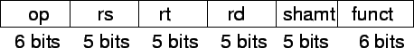
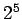
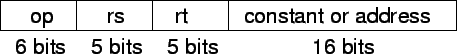
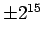
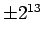

ฟิลด์ ของ MIPS มีการกำหนกชื่อดังต่อไปนี้

ในแต่ละฟิลด์ มีความหมายดังต่อไปนี้
ในรูปแบบของคำสั่งขั้นต้นจะเป็นปัญหาเมื่อเกิดกรณีที่ตัวคำสั่งมีความต้องการขนาดในการแสดงค่าในฟิลด์ต่างๆ มากกว่ารูปแบบคำสั่งขั้นต้น ตัวอย่างเช่นคำสั่ง load ที่ต้องระบุชื่อรีจีสเตอร์ที่ต้องการใช้งานถึงสองตัว ถ้าใช้รูปแบบของคำสั่งขั้นต้นจะเป็นการจำกัดค่าคงที่ในคำสั่ง load เพียง 5 บิท ซึ่งมีค่าเท่ากับ  หรือ 32 เท่านั้น 5 บิทในฟิลด์ shamt มีค่าน้อยเกินไปที่จะสามารถใช้ประโยชน์ได้
จากที่เรากำหนดให้ขนาดของคำสั่งมีค่าคงที่เท่ากับ 32 บิท และมีรูปแบบเดียว เป็นการนำมาสู่หลักการพื้นฐานในการออกแบบคอมพิวเตอร์ หลักการสุดท้ายซึ่งได้แก่
Design Principle 4: Good design demands good compromises.
จากหลักการดังกล่าว คำสั่งในคอมพิวเตอร์ MIPS มีการกำหนดให้มีขนาดของคำสั่งเท่ากันหมดคือ 32 บิท และมีรูปแบบคำสั่งที่แตกต่างกันสำหรับชุดคำสั่งต่างๆ รูปแบบแรกที่ได้แสดงมาเรียกว่ารูปแบบคำสั่งรีจีสเตอร์ หรือ R-type (Register) รูปแบบของคำสั่งอันอื่นได้แก่รูปแบบ I-type (Immediate) ที่ใช้สำหรับคำสั่งที่มีค่าคงที่ หรือคำสั่งสำหรับการถ่ายโอนข้อมูลระหว่างรีจีสเตอร์กับหน่วยความจำหลัก รูปแบบ และตำแหน่งของฟิลด์ ใน I-Type มีการกำหนดดังต่อไปนี้

ขนาด 16 บิทของฟิลด์ Constant หรือ Address สามารถแสดงค่าระหว่าง  หรือ 32,768 ไบท์ ( หรือ 8192 words) จากค่าแอดเดรสในรีจีสเตอร์อ้างอิง rs เช่นเดียวกับค่าค่าที่ในคำสั่ง addi ที่ถูกจำกัดค่าค่งที่ในระหว่าง
จากรูปแบบคำสั่งจะเห็นได้ว่าถ้าต้องการจำนวนรีจีสเตอร์มากกว่า 32 รูปแบบคำสั่งขั้นต้นจะต้องเพิ่มอีก 1 บิททั้งในฟิลด์ rs และ rt ทำให้จัดคำสั่งที่ประกอบด้วยชื่อของรีจีสเตอร์ต่างๆ ให้ลงพอดีในหนึ่ง Word ได้ยาก
จากคำสั่งข้างล่าง
lw $t0, 32($s3) # Temporary reg $t0 gets A[8]
นำค่า 19 (สำหรับ $s3) ใส่ลงในฟิลด์ rs และนำค่า 8 (สำหรับแสดงค่า $t0) ใส่ลงในฟิลด์ rt และค่า 32 ใส่ลงในฟิลด์แอดเดรส ในคำสั่ง load ฟิลด์ rt เป็นฟิลด์สำหรับเก็บค่าที่ได้จากการโหลดค่าจากหน่วยความจำ หรือเรียกว่า Destination Register
ถึงแม้มาการใช้รูปแบบคำสั่งหลายลักษณะ เช่น R-type และ I-type จะส่งผลให้ฮาร์ดแวร์มีความซับซ้อนขึ้น แต่จะสังเกตเห็นได้ว่าสามฟิลด์แรกในคำสั่ง R-type และ I-type มีขนาดเท่ากัน และอยู่ในตำแหน่งเดียวกัน และฟิลด์สุดท้ายของ I-type มีขนาดพอดีกับสามฟิลด์สุดท้ายของคำสั่งรูปแบบ R-type มารวมกัน